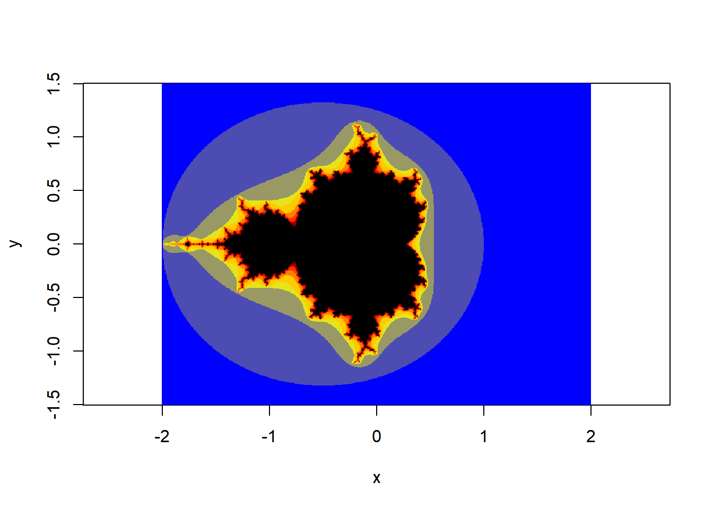
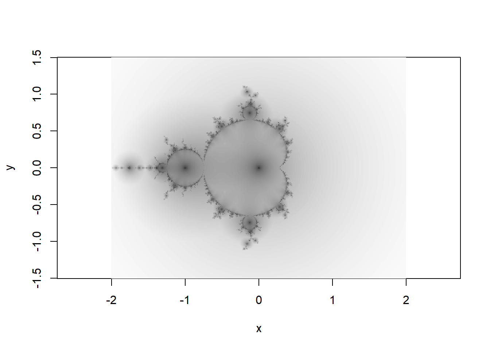
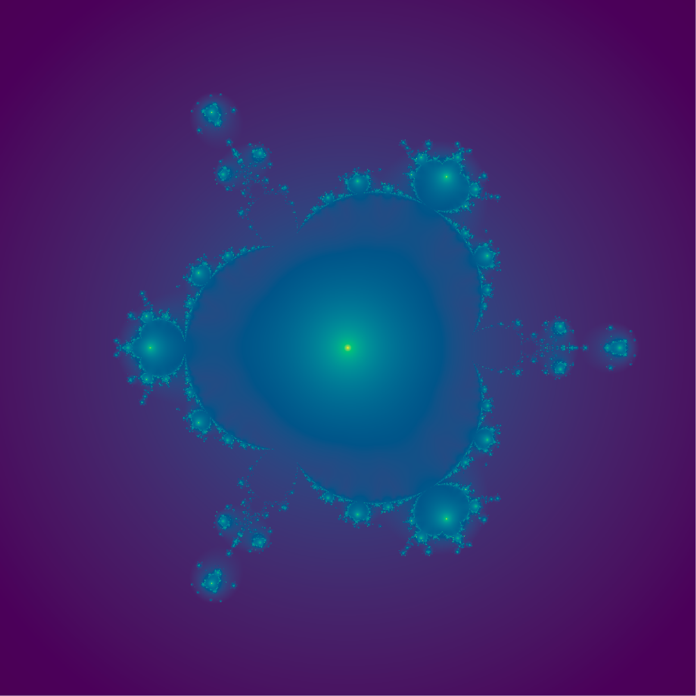

Mysterybrot?
art
R
Mandelbrot sets and mystery curves? Mysterybrots? Let’s go!
The Mandlebrot set
You’ve all seen the the Mandlebrot set before. It’s one of the most familiar and iconic fractal images.
It was first produced around 1980 by Beniot Mandlebrot, based on mathematical work by Gaston Julia at the start of the 20th century. The fratcal is insanely beautiful and interesting, and as you all know if you have even the most passing interest in computer art, there are millions of beautiful images of it all over the place.
The formula underlying the Mandlebrot set is as simple as the outputs are complex. If we consider the sequence:
\[\begin{align*}{} z_o&=0\\ z_n&=z_{n-1}^2+c \end{align*}\]
then the Mandelbrot set includes all values \(c\in\mathbb{C}\) for which \(z_n\) does not diverge to infinity.
Mandlebrot in R
Generating images of the Mandlebrot set using R is very simple, given R’s natural handling of complex numbers and vectorisation.
Myles Harrison has a nice explanation and code sample for a vectorised Mandelbrot set that survives as an R-bloggers post here: https://www.r-bloggers.com/2014/12/the-mandelbrot-set-in-r/. This is the output:
Orbit traps vs escape times
The image above uses ‘escape time’ (k in the code) to colour the fractal. The escape time for each \(c=x+iy\) is the smallest \(n\) for which \(|z_n|>2\). This leads to the discrete areas of colour in the image.
An alternative way to shade the fractal is by a so called ‘orbit trap’. The colour for each \(c\) is the closest \(z_n\) ever gets to a particular point or set of points in \(\mathbb{C}\). Here I choose the origin as the reference point, so the colour in the image corresponds to \(\min(|z_n|)\) for each \(c\).
xmin = -2
xmax = 2
nx = 500
ymin = -1.5
ymax = 1.5
ny = 500
n=200
# variables
x <- seq(xmin, xmax, length.out=nx)
y <- seq(ymin, ymax, length.out=ny)
c <- outer(x,y*1i,FUN="+")
z <- matrix(0.0, nrow=length(x), ncol=length(y))
o <- matrix(1e5, nrow=length(x), ncol=length(y))
for (rep in 1:n) {
index <- which(Mod(z) < 2)
z[index] <- z[index]^2 + c[index]
o[index] <- pmin(o[index] , Mod(z[index]))
}
image(x,y,o^.2,col=hcl.colors(100,palette = "Grays"),asp=1)
We can make a couple of modifications to the visual display. Here I use a viridis palette, rescale the values with a log transformation and switch off the plotting annotations:
l=1.5
# variables
res=1000
n=100
x <- y <- seq(-l,l, length.out=res)
c <- outer(x-.75,y*1i,FUN="+")
z <- matrix(0.0, nrow=res, ncol=res)
o <- matrix(1e5, nrow=res, ncol=res)
for (rep in 1:n) {
index <- which(Mod(z) < 2)
z[index] <- z[index]^2 + c[index]
o[index] <- pmin(o[index] , Mod(z[index]))
}
o2 <- -log(o) |> pmax(-6)
par(mar=c(5,5,5,5))
image(x,y,o2,col=hcl.colors(500),asp=1,axes=F,ann=F)Multibrots!
Using a higher power for the iteration equation leads to a related shape with a higher order of rotational symmetry. These are called multibrots. Pretty horrible word but there we are.
l=1.5
# variables
res=1000
n=100
par(mfrow=c(2,2),mar=2*c(1,1,1,1))
for(i in c(3,4,5,6)){
x <- y <- seq(-l,l, length.out=res)
c <- outer(x,y*1i,FUN="+")
z <- matrix(0.0, nrow=res, ncol=res)
o <- matrix(1e5, nrow=res, ncol=res)
for (rep in 1:n) {
#print(rep)
index <- which(Mod(z) < 2)
z[index] <- z[index]^i + c[index]
o[index] <- pmin(o[index] , Mod(z[index]))
}
o2 <- -log(t(o)) |> pmax(-10)
image(x,y,o2,col=hcl.colors(500,palette = hcl.pals(type="sequential")[i]),asp=1,axes=F,ann=T,
main=bquote(z[n+1] == z[n]^.(i)+c), xlab = NULL, ylab=NULL)
}Mysterybrots!
So, what should be obvious from the image above is that the Multibrot of order \(i\) has order \(i-1\) rotational symmetry.
Sound familiar? It’s similar to the rule for a circular harmonograph.
t <- seq(0,2*pi,l=500)
par(mfrow=c(2,2),mar=c(0,0,3,0))
for(i in 3:6){
plot(exp(1i*t) + exp(1i*t)^i, type="l", axes=F,ann=T,xlab="", ylab="",asp=1,
main=sprintf("exp(2*pi*i*z) + exp(2*pi*i*z)^%d",i))
}This is exciting because we know that we can make beautiful and interesting shapes (mystery curves) by adding circular harmonographs. So long as we choose the frequencies carefully. Eg here we add three circular movements, with frequencies 1, 4 and 7.
t <- seq(0,2*pi,l=500)
par(mar=c(0,0,3,0))
plot(exp(1i*t) + exp(1i*t)^4 + exp(1i*t)^7,
type="l", axes=F,ann=T,xlab="", ylab="",asp=1,
main=sprintf("exp(2*pi*i*z) + exp(2*pi*i*z)^4 + exp(2*pi*i*z)^7")
)If we vary the amplitudes and the phases of the circular motion we can get all sorts of interesting shapes:
set.seed(123)
t <- seq(0,2*pi,l=500)
par(mfrow=c(3,3),mar=c(1,1,1,1),oma=c(1,1,1,1))
for(i in 1:9){
plot(exp(1i*t) + runif(1)*exp(1i*t)^4 + runif(1)*exp(1i*(t+pi*runif(1)))^7,
type="l", axes=F,ann=T,xlab="", ylab="",asp=1
)
}Notice here every mystery curve has rotational symmetry order 3. This is because \(1\equiv 4\equiv 7\ \pmod 3\). In general, a mystery curve will have rotational symmetry order \(k\) if the frequency of each component is equivalent \(\pmod k\).
Does the same thing happen if we add multibrots? What does it even mean to add multibrots? What happens if we use a more general polynomial in the iteration equation of the fractal, but keep the restriction that the order of each term should be equivalent to \(1 \pmod k\).
Lets look at the fractal defined by the system:
\[\begin{align*}{} z_o&=0\\ z_n&=z_{n-1}^4+z_{n-1}^7+c \end{align*}\]
and compare it to a similar mystery curve:
par(mfrow=c(1,2))
par(mar=c(0,0,3,0))
l=1.5
# variables
res=1000
n=100
x <- y <- seq(-l,l, length.out=res)
c <- outer(x,y*1i,FUN="+")
z <- matrix(0.0, nrow=res, ncol=res)
o <- matrix(1e5, nrow=res, ncol=res)
for (rep in 1:n) {
#print(rep)
index <- which(Mod(z) < 2)
z[index] <-
z[index]^4 +
z[index]^7 +
c[index]
o[index] <- pmin(o[index] , Mod(z[index]))
}
o2 <- -log(o) |> pmax(-7)
image(x,y,o2,col=hcl.colors(1000,palette = "Grays"),asp=1,axes=F,ann=F,
main="bquote(z[n+1] == z[n]^.(i)+c)")
plot(exp(1i*t) + exp(1i*t)^4 + exp(1i*t)^7,
type="l", axes=F,ann=T,xlab="", ylab="",asp=1, xlim=2*c(-l,l),ylim=2*c(-l,l),
main=sprintf("exp(2*pi*i*z) + exp(2*pi*i*z)^4 + exp(2*pi*i*z)^7")
)
Success! We have made a more general polynomial multibrot that has the same rotational symmetry as the mystery curve, and shows elements from each of its terms!
I call these symmetric multibrots mysterybrots.
Here’s some more:
Code
par(mfrow=c(1,1))
par(mar=c(0,0,0,0))
l=1.5
# variables
res=1000
n=100
x <- y <- seq(-l,l, length.out=res)
c <- outer(x,y*1i,FUN="+")
z <- matrix(0.0, nrow=res, ncol=res)
o <- matrix(1e5, nrow=res, ncol=res)
for (rep in 1:n) {
#print(rep)
index <- which(Mod(z) < 2)
z[index] <-
z[index]^4 -
z[index]^7 +
c[index]
o[index] <- pmin(o[index] , Mod(z[index]))
}
o2 <- -log(o)
image(x,y,o2,col=hcl.colors(1000),asp=1,axes=F,ann=F,
main= "z = z^4-z^7 + c")
Code
par(mfrow=c(1,1))
par(mar=c(0,0,0,0))
l=1.5
# variables
res=1000
n=100
x <- y <- seq(-l,l, length.out=res)
c <- outer(x,y*1i,FUN="+")
z <- matrix(0.0, nrow=res, ncol=res)
o <- matrix(1e5, nrow=res, ncol=res)
for (rep in 1:n) {
#print(rep)
index <- which(Mod(z) < 2)
z[index] <-
z[index]^6 -
(exp(2i*pi/3)*z[index])^11 +
c[index]
o[index] <- pmin(o[index] , Mod(z[index]))
}
o2 <- -log(o)
image(x,y,o2,col=hcl.colors(1000,palette = "Oslo"),asp=1,axes=F,ann=F)Animated mysterybrot
But wait, there’s more! By a similar process to that used in my mystery curve post, we can make beautiful animations by varying the mysterybrot parameters over time, ensuring continuous transitions between different multibrots of different orders, avoiding fractional orders that make messy images.
(I can’t figure out how to get this to loop by default, do yourself a favour, right click and hit ‘loop’)
I love how the transitions between the multibrots of different orders work, with pieces of the fractal being tossed around and other parts rearranged as it evolves.
The key to the smooth transition between shapes of different orders is the same as in the mystery curves post, and it is explained there, but in short, the coefficients for terms in the polynomial used for iteration oscillate, and we only change the order of any of the terms when its coefficient is zero.
The complete code for this animation is below, but be warned, it takes ages to render this in R. It would probably work in real time using a shader, so if you want to reproduce this a shader is probably the better approach, unless you have a spare hour.
This code will create a .png for every frame of the animation, then you’ll need ffmpeg or similar to turn these into a video.
Thanks for reading, comments always welcome.
fv <- \(x) ifelse(x < 0.2 , x*3 , 1-(1-x)/2 ) # curve for the brightness
res=1000 # resolution
r=300 # total number of frames
for(i in 1:r){
zoom=1.5
theta = 2*pi*i/r # defines the amplitude of terms of the polynomial
a1 = cos(theta) * exp(-1i*theta)
a2 = (theta<pi)*sin(theta) * exp(1i*2*theta)
a3 = (theta>pi)*sin(theta) * exp(1i*2*theta)
x <- zoom*seq(-1,1, l=res) # get the x and y axes
y <- zoom*seq(-1,1, l=res)
c <- outer(x,y*1i,FUN="+")
z <- matrix(0, nrow=res, ncol=res)
o <- matrix(1e6 ,nrow=res, ncol=res)
k <- matrix(0, nrow=res, ncol=res)
for (rep in 1:100) { # only need 100 reps
index <- which(Mod(z) < 10)
z[index] <-
a1*z[index]^4 +
a2*z[index]^5 +
a3*z[index]^6 +
c[index]
o[index] <- pmin(o[index] , Mod(z[index])^2)
}
png(sprintf("mysterybrot%04d.png",i), width=res,height=res, type="cairo")
par(mfrow=c(1,1), mar=c(2,2,2,2), bg="#111111")
if(i==1){ # set the breaks from the first frame to keep them consistent.
breaks <- seq(-log(o)|>pmax(-4) |>min(),
-log(o)|>pmax(-4) |>max(),
l=501)
}
image(x,y,-log((o)) |> pmax(-4),
col=hsv(seq(i/r+.0,i/r+0.8,l=500)%%1,seq(1,0,l=500),fv(seq(0,1,l=500))),
breaks=breaks,
asp=1,axes=F,ann=F, useRaster = TRUE)
dev.off()
}
shell("ffmpeg -r 30 -y -i mysterybrot%04d.png -c:v libx264 -r 30 -pix_fmt yuv420p mysterybrot.mp4")